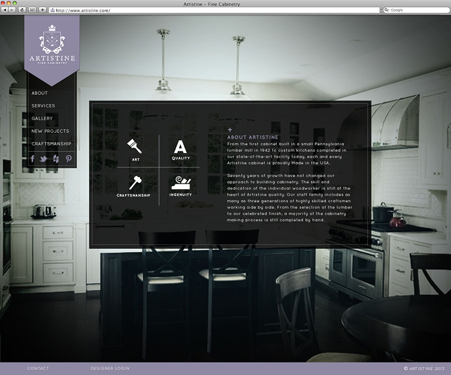
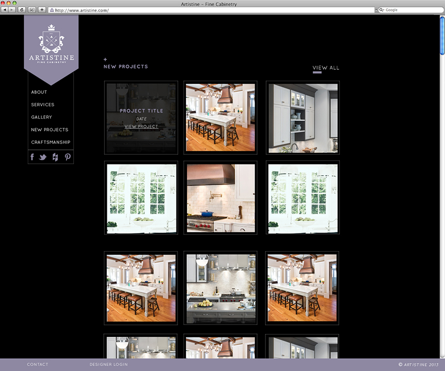
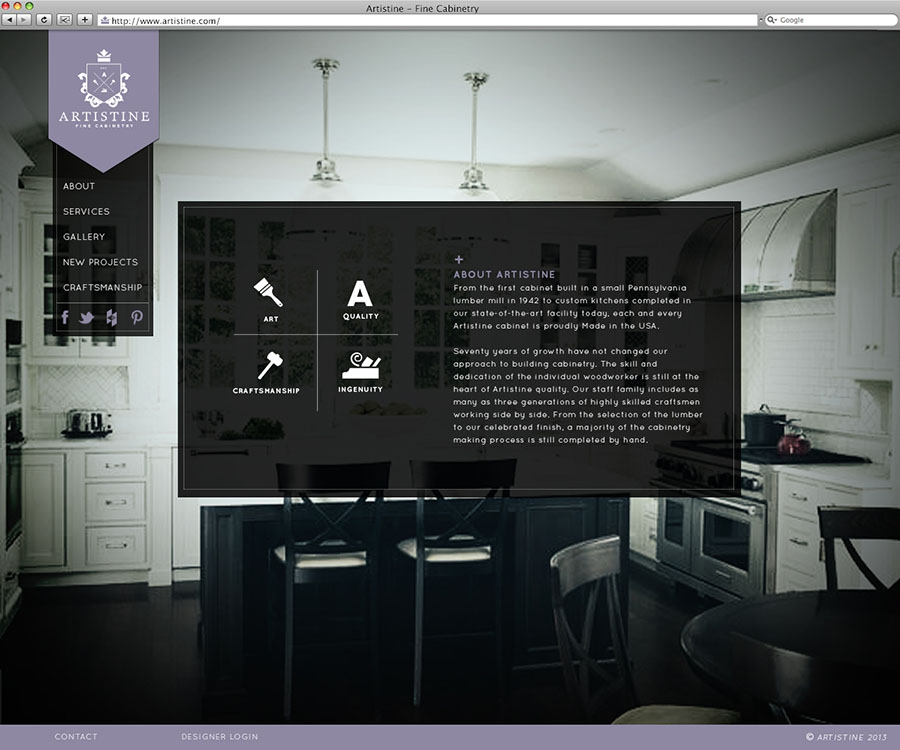
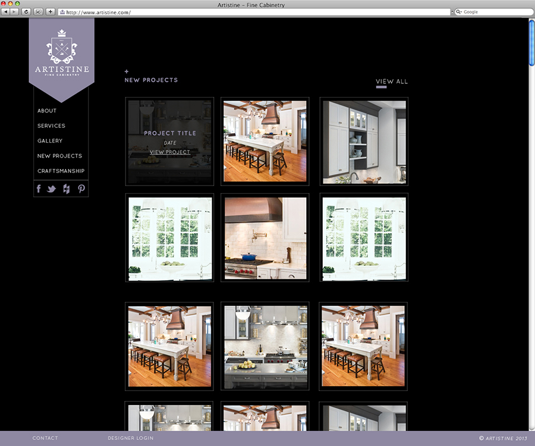

Choose a project below or scroll through to view all projects.

Broadridge SIFMA invitations
This project was to create an invitation, onsite invitation and dinner ticket for Broadridge's booth at the Securities Industry and Financial Markets Association conference. The objective was to illustrate Broadridge's "Denim and Diamonds" theme while staying true to the brand.
Details
Print Design
Date
2012
Love & Lore
Lore & Love is a modern wedding invitation service ran by me. I wanted to evoke a dark and romantic feel with elegance and a touch of glam. Muted purples and pink lend a sense of femininity in a sector mainly targeted towards women.
Details
Branding, Print Design, Web Design, Front-End Web Development
Date
2012
Craigslist Re-Brand
For this academic assignment the objective was to create a friendly brand concept for the popular online community/ classifieds website Craigslist.com. Creating a more user friendly web site, and a unified campaign helped polish the companies current reputation while still upholding their "non-corporate" mission.
Details
Logo Design, Web design, Interactive Design
Role
Date
2012
Artistine Fine Cabinetry
On this project I was tasked with creating a logo and designing a website for a high end custom kitchens company. Our client wanted a brand that would tell a story about their attention to detail and craftsmanship of their products so it only felt natural to create a visual deck that had meaningful detail through iconography and meticoulously choosen imagey.
Details
Logo Design, Web Design
Date
2012
 



Cycle Media
Cycle Media is an up and coming mobile advertising company with a hip target demographic and small carbon foot print. Our client wanted a logo that would stand out when seen and get people to turn their heads, I used bold colors and graphics in the logo to fullfill this request.
Details
Branding, Print Design
Date
2012
Triangle Bulbs
Before Triangle bulbs came to us they where already a best seller on Amazon but wanted to have a brand to expand their reach even more. I used inspiration from their most commonly sold bulb to create a logo that embodied the product as well as the company name.
Details
Logo Design, Packaging Design
Date
2012
Little Coco
Our client Little Cocoon, a small childrens clothing boutique based out of brooklyn, needed a logo for their new hip brand. I choose to use butterfly iconography for the logo since this was to be kind of the older sibling of the parent brand. Soft warm colors and hand drawn illustrations embody the style of teh clothing.
Client
Logo Design, Print design
Date
2012
DecoWare
This project called for a complete re-design of an existing site and outdated logo. I started with doing some reaserch on some of the brands that the luxury hardware company sold on their site and came up with something as sleek, modern and sophisticated as their inventory.
Details
Logo Design, Web Design, Print Design
Date
2012
XL Plastics
My main objective with this project was to take a boring and outdated logo and make it something modern and new all while still maintaining the look of the companies original look and feel.
Details
Logo Design
Date
2012
Vivox Technologies Logo Design
Viviox is a new innovative emergency light company looking for a unique logo and webdesign to make them stand out in their sector. Channeling the look and feel of law inforcement, their main clientelle, I used bold typography and relevent product symbolism in the logo.
Categorie
Client
details
Role
Graphic Design
Date
2012
Sweat the Teknek
for this freelance project, I had the pleasure of experincing my clients services first hand, allowing me to gather plenty of infromation about the brand as possible. My client wanted a logo that appealed to both sexes and told a story about her mission as a personal trainer. Utilising the two letters of the brand name I was able to illustrate what her services embodied.
Details
Logo Design
Date
2016
Feathers Web Design
Feathers is a wholesale childrens clothing company specialising in basics and undies with bold, modern prints. My designs play off of the peacock feather in the logo and the playful trims and patterns seen in companie's stock.
Details
Web Design
Date
2012